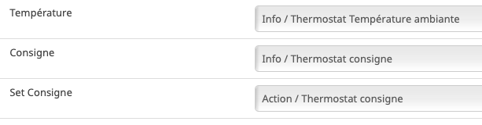

Eurotronics¶
Radiateur¶
Inclusion¶
Traduction de la doc
Une fois les piles insérées, PrP apparaît à l’écran et le Spirit ZigBee est prêt à être assemblé. Le Spirit ZigBee est réglé en usine en mode Add-in et affiche Jin en connexion avec une icône de radio clignotante sur l’écran LCD. Si le Spirit ZigBee a été ajouté avec succès, l’écran LCD affiche en permanence l’icône de la radio et le voyant clignote en vert. Pour continuer la mise en service, le bouton Boost doit maintenant être confirmé. Affiche l’écran LCD “InS”, l’assemblage peut être effectué. Continuer avec “4.5 Montage sur le radiateur”.
Après un reset un appuis sur e bouton central provoque l’association et la creation dans Abeille de la vanne (Zigate en mode inclusion lors de la manipulation).
Fonctionnement¶
- La vanne envoie à Abeille la température de la pièce.
- La vanne envoie à Abeille son taux d’ouverture en cours.
- Le mode Boost permit d’ouvrir la vanne a fond (pendant 15 min (a verifier je ne suis plus sure au moment d écrire la doc.)).
- La vanne peut fonctionner en deux modes. Mode automatique, la vanne régule la température toute seule. Mode manuel, Abeille pilote le taux d’ouverture de la vanne (il n’y a pas de regulation de temperature fait par la vanne).
- La vanne demande au réseau toutes le 6s les commandes à executer. La vanne doit répondre dans les 6s aux demandes Abeille.
- Vous pouvez faire pivoter l affichage de haut en bas en fonction de la position de votre vanne pour faciliter la lecture.
Reset¶
Traduction de la doc:
Maintenez les touches boost, moins et plus enfoncées jusqu’à ce que le compteur de l’écran LCD atteigne 10. Ne relâchez le bouton que lorsque l’écran LCD affiche “rES”. La réinitialisation est effectuée peu de temps après le relâchement du bouton. L’écran LCD affiche «PrP» et le poussoir de la vanne passe en position de montage.
Quand on fait ca, l’écran fait un countdown et le reset se produit. Puis l’écran affiche Rst.
Homebridge¶
Voici la configuration qui fonctionne sur mon système:
